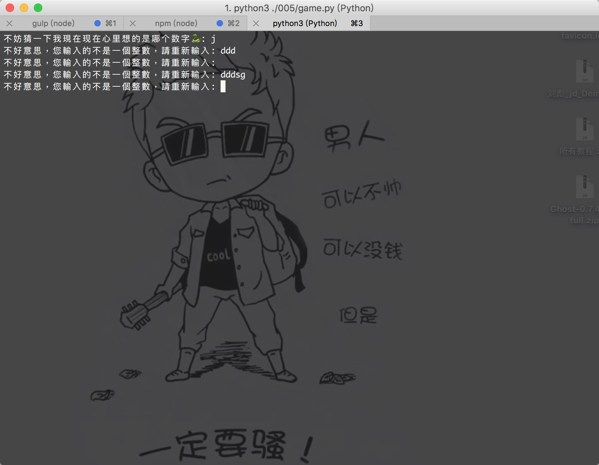
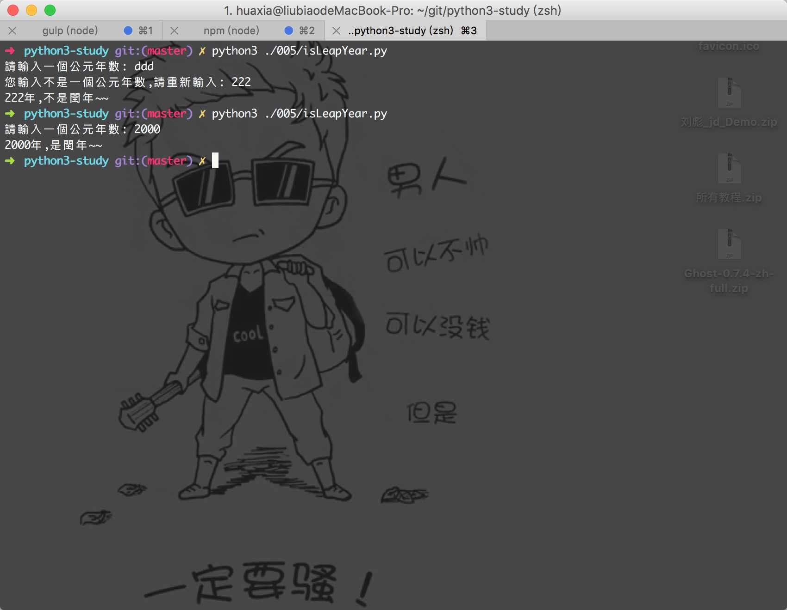

学习Python 005
测试题：
0.在 Python 中， int 表示整型，那你还记得
bool、float和str分别表示 什么吗？
bool：表示布尔型
float: 表示浮点数（小数）
str: 表示字符串
1.你知道为什么布尔类型 (
bool) 的True和False分别用 1 和 0 来代替 吗？
在計算機語言中，計算機能看懂的只有 1 和 0倆種值，同時也代表了倆種狀態，1代表聯通狀態，0代表斷開狀態；
2.使用
int()将小数转换为整数，结果是向上取整还是向下取整呢？
既不是向上取整，也不是向下取整，是斷尾法，意思是說截斷小數點部分，保留整數部分；
3.我们人类思维是习惯于“四舍五入”法， 你有什么办法使得
int()按照“四 舍五入”的方式取整吗？
int() 固然没那么“聪明”，但机器是死的，人是活的！
# 5.4 “四舍五入”结果为： 5，
int(5.4+0.5) == 5
# 5.6 “四舍五入”结果为： 6，
int(5.6+0.5) == 6
4.取得一个变量的类型， 教程中介绍可以使用 type() 和 isinstance() ， 你更 倾向于使用哪个？
當然是isinstance咯，但是也不是必須這樣；
建议使用 isinstance() ，因为它的返回结果比较直接，另外 type() 其实并没
有你想象的那么简单，我们后边会讲到。
# isinstance()用法
# eg: isinstance(5, int),檢查5是不是int型，
>>> True
# type()用法
# eg: type(5)
>>> <class 'int'>
5.Python3 可以给变量命名中文名，知道为什么吗？
Pyhton3 源码文件默认使用 utf-8 编码（支持中文） ， 这就使得以下代码是合法
的：
>>> 花夏 = '花開半春入了夏'
>>> '花開半春入了夏'
>>> print(花夏)
>>> 花開半春入了夏
0. 针对輸入錯誤的類型，再次改进我们的小游戏：当用户输入错误
类型的时候，及时提醒用户重新输入，防止程序崩溃。
import random
times = 3
secret = random.randint(1, 10)
print('------------------我爱python------------------')
# 这里先给guess赋值（赋一个绝对不等于secret的值）
guess = 0
# print()默认是打印完字符串会自动添加一个换行符，end=" "参数告诉print()用空格代替换行
# 嗯，觉得富有创意的你应该会尝试用 end="🐍"？
# print("不妨猜一下我現在现在心里想的是哪个数字🐍 : ", end = " ")
while (guess != secret) and (times > 0):
temp = input("不妨猜一下我現在现在心里想的是哪个数字🐍 : ")
# 這裡不能使用if; 試想下，用if再次輸入事是不是還需要繼續判斷呢？
while not temp.isdigit():
temp = input('不好意思，您輸入的不是一個整數，請重新輸入: ')
guess = int(temp)
times = times - 1 # 用户每输入一次，可用机会就-1
if guess == secret:
print("我草，你是我心里的蛔虫吗？！")
print("哼，猜中了也没有奖励！")
else:
if guess > secret:
print("哥，大了大了~<del>")
else:
print("嘿，小了，小了</del>~")
if times > 0:
print("再试一次吧：", end=" ")
else:
print("机会用光咯T_T")
print("游戏结束，不玩啦^_^")

isdigit() BIF
参数：无。
isdigit() 方法检测字符串是否只由数字组成。
返回值：如果字符串只包含数字则返回 True 否则返回 False。
实例
以下实例展示了isdigit()方法的实例：
#!/usr/bin/python
str = "123456"; # Only digit in this string
print(str.isdigit())
str = "this is string example....wow!!!";
print(str.isdigit())
輸出結果：
True
False
s为字符串
s.isalnum() 所有字符都是数字或者字母，为真返回 Ture，否则返回 False。
s.isalpha() 所有字符都是字母，为真返回 Ture，否则返回 False。
s.isdigit() 所有字符都是数字，为真返回 Ture，否则返回 False。
s.islower() 所有字符都是小写，为真返回 Ture，否则返回 False。
s.isupper() 所有字符都是大写，为真返回 Ture，否则返回 False。
s.istitle() 所有单词都是首字母大写，为真返回 Ture，否则返回 False。
s.isspace() 所有字符都是空白字符，为真返回 Ture，否则返回 False。
1.写一个程序，判断给定年份是否为闰年。
# 公元年数可被4整除（但不可被100整除）为闰年,但是正百的年数必须是可以被400整除的才是闰年。其他都是平年
year = input('請輸入一個公元年數: ')
isLeapYear = False
while not year.isdigit():
year = input('您輸入不是一個公元年數,請重新輸入: ')
# 轉換為int類型
year = int(year)
if (year % 100 == 0 and year % 400 == 0):
isLeapYear = True
elif (year % 4 == 0 and year % 100 != 0):
isLeapYear = True
else:
isLeapYear = False
# 轉換為str
year = str(year)
if isLeapYear:
print(year + '年,是閏年<del>')
else:
print(year + '年,不是閏年</del>')


微信打賞

支付寶打賞